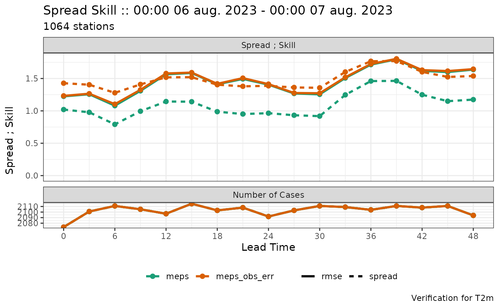
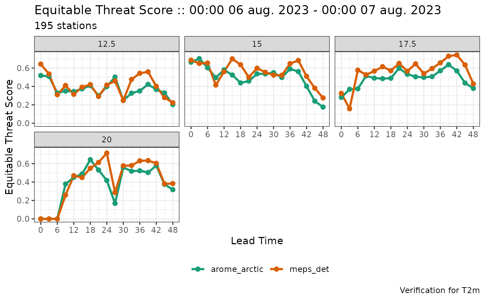
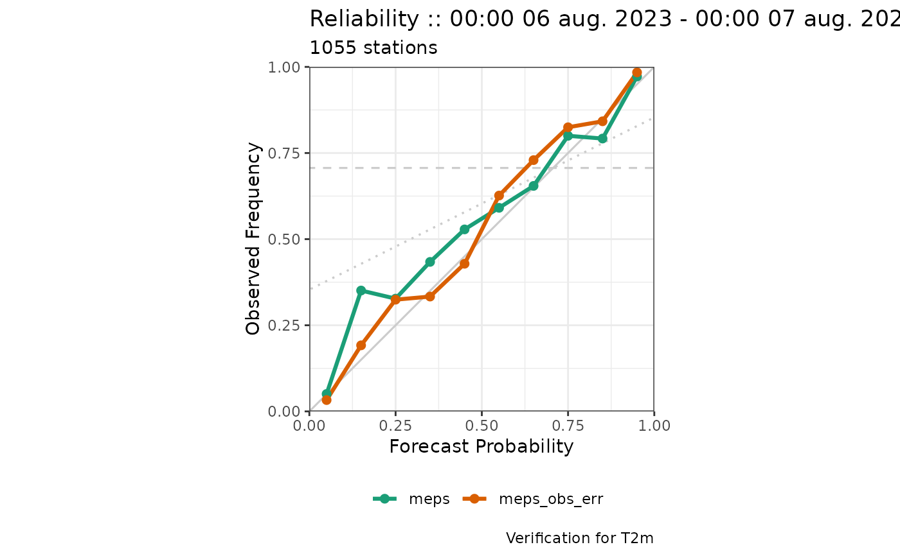

plot_point_verif is used to plot verification scores computed by
functions from the harpPoint package. The function uses non standard
evaluation (NSE) meaning that none of the arguments should be quoted. For
arguments that can take more than one value, (facet_by and
filter_by), the arguments should be wrapped inside the
vars function.
Usage
plot_point_verif(
verif_data,
score,
verif_type = c("ens", "det"),
x_axis = lead_time,
y_axis = rlang::enquo(score),
rank_is_relative = FALSE,
rank_hist_type = c("bar", "lollipop", "line"),
colour_by = fcst_model,
colour_table = NULL,
hex_palette = viridisLite::plasma(256),
hex_colour = "grey20",
extend_y_to_zero = TRUE,
plot_num_cases = TRUE,
extend_num_cases_to_zero = FALSE,
num_cases_position = c("below", "right", "above", "left"),
facet_by = NULL,
num_facet_cols = 3,
facet_scales = "fixed",
facet_labeller = "label_value",
linetype_by = NULL,
line_width = 1.1,
point_size = 2,
filter_by = NULL,
plot_title = "auto",
plot_subtitle = "auto",
plot_caption = "auto",
x_label = "auto",
y_label = "auto",
legend_position = "bottom",
num_legend_rows = 1,
log_scale_x = FALSE,
log_scale_y = FALSE,
flip_axes = FALSE,
colour_theme = "bw",
base_size = 11,
base_family = "",
base_line_size = base_size/22,
base_rect_size = base_size/22,
...
)Arguments
- verif_data
Output from ens_verif, det_verif, or a harpPoint verification function for individual scores.
- score
The score to plot. Should be the name of one of the columns in the verification tables or the name of a dervived score, such as
spread_skill,spread_skill_ratio, orbrier_score_decomposition.- verif_type
The type of verification to plot for ensemble verification data. The default is "ens", but set to "det" to plot verification scores for members. If set to "det", you should also set colour_by = member.
- x_axis
The x-axis for the plot. The default is lead_time, but could also be threshold. For some scores this is overrided. Note that leadtime will be treated exactly the same as lead_time for compatibility with older versions.
- y_axis
The y-axis for the plot. The default is to take the same as the score input, and for most scores this is overrided.
- rank_is_relative
Logical. If TRUE rank histograms are plotted with the relative rank (between 0 and 1) on the x-axis. The default is FALSE.
- rank_hist_type
For rank histograms, the plot can be done as a bar chart, lollipop chart or a line chart.
- colour_by
The column to colour the plot lines or bars by. The default is
fcst_model, for the model name. Set to NULL for all lines / bars to have the same colour.- colour_table
A data frame with column names equal to the value of
colour_byand "colour". The colour column should contain colour names or hex codes. There should be one row for each value in thecolour_bycolumn. If set to NULL, the default colour table is used.- hex_palette
The colour palette to use for
hexbin. This should be a vector of colours. The default is plasma.- hex_colour
The outline colour of hexagons for hexbin plots. The default is "grey20".
- extend_y_to_zero
Logical. Whether to extend the y-axis to include zero.
- plot_num_cases
Logical of whether to inlcude the number of cases as a panel in the plot. Only currently works for summary scores, and if
facet_byis set, the number of cases panel is not drawn since it will clutter the plot.- extend_num_cases_to_zero
Logical of whether to extend the axis for the number of cases to zero. The default behaviour (FALSE) is to have the axis limits set to the minimum and maximum number of cases.
- num_cases_position
The position of the number of cases panel relative to the score panel. Can be "below" (the default), "above", "left", or "right". Typically only "below" and "above" will work unless plotting vertical profile scores with plot_profile_verif, where only "left" and "right" can be chosen.
- facet_by
The column(s) to facet the plot by. Faceting is a term used for generating plot panels. The argument must be wrapped inside the vars function - e.g.
facet_by = vars(threshold).- num_facet_cols
Number of columns in the faceted plot.
- facet_scales
Should facet scales be fixed ("fixed", the default), free ("free"), or free in one dimension ("free_x", "free_y")?
- facet_labeller
The function used to label the title strip. Typically this will always be "label_value", but if the column used for
facet_bycontains plotmath expressions, "label_parsed" should be used. See labellers for more information.- linetype_by
The column to set the line types of the plot by.
- line_width
The width of lines to plot. The default is 1.1.
- point_size
The size of points to plot. Set to 0 for no points. The default is 2.
- filter_by
Filter the data before plotting. Must be wrapped inside the vars function. This can be useful for making a single plot where there are many groups. For example, for reliability there should be one plot for each lead time and threshold, so the data can be filtered with e.g.
filter_by = vars(lead_time == 12, threshold == 280).- plot_title
Title for the plot. Set to "auto" to automatically generate the title. Set to "none" for no title. Anything else inside quotes will be used as the plot title.
- plot_subtitle
Subtitle for the plot. Set to "auto" to automatically generate the subtitle. Set to "none" for no subtitle. Anything else inside quotes will be used as the plot subtitle.
- plot_caption
Caption for the plot. Set to "auto" to automatically generate the caption Set to "none" for no caption. Anything else inside quotes will be used as the plot caption.
- x_label
Label for the x-axis. Set to "auto" to automatically generate the label from the data. Set to "none" for no label. Anything else inside quotes will be used as the x-axis label.
- y_label
Label for the y-axis. Set to "auto" to automatically generate the label from the data. Set to "none" for no label. Anything else inside quotes will be used as the y-axis label.
- legend_position
The position of legends ("none", "left", "right", "bottom", "top", or two-element numeric vector).
- num_legend_rows
The maximum number of rows in the legend.
- log_scale_x
Logical - whether to plot the x-axis on a log scale.
- log_scale_y
Logical - whether to plot the y-axis on a log scale.
- flip_axes
Logical of whether to swap the x and y axes. This is typically used when this function is called by plot_profile_verif.
- colour_theme
The colour theme for the plot - can be any ggplot2 theme (see theme_grey), or "theme_harp_grey", "theme_harp_midnight", or "theme_harp_black".
- base_size
base font size.
- base_family
base font family.
- base_line_size
base size for line elements.
- base_rect_size
base size for rect elements.
- ...
Arguments to aes e.g. group = ...
Value
A plot. Can be saved with ggsave.
Examples
plot_point_verif(verif_data_ens, crps)
plot_point_verif(verif_data_ens, spread_skill)

plot_point_verif(verif_data_det, equitable_threat_score, facet_by = vars(threshold))
#> Warning: plot_num_cases = TRUE cannot be used with facet_by. plot_num_cases set to FALSE.

plot_point_verif(verif_data_ens, reliability, filter_by = vars(lead_time == 12, threshold == 16))
